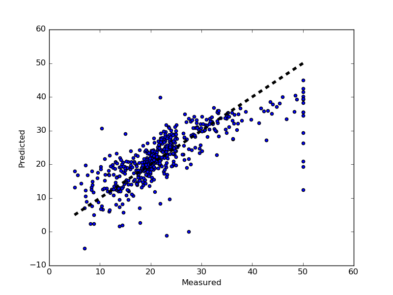

本例子展示了如何使用 cross_val_predict 来可视化预测误差。
Python source code: plot_cv_predict.py
from sklearn import datasets
from sklearn.cross_validation import cross_val_predict
from sklearn import linear_model
import matplotlib.pyplot as plt
lr = linear_model.LinearRegression()
boston = datasets.load_boston()
y = boston.target
# cross_val_predict 返回一个跟`y`一样大的数组，
# 其中每一个元素是交叉验证获得的预测值:
predicted = cross_val_predict(lr, boston.data, y, cv=10)
fig, ax = plt.subplots()
ax.scatter(y, predicted)
ax.plot([y.min(), y.max()], [y.min(), y.max()], 'k--', lw=4)
ax.set_xlabel('Measured')
ax.set_ylabel('Predicted')
plt.show()
Total running time of the example: 1.98 seconds ( 0 minutes 1.98 seconds)